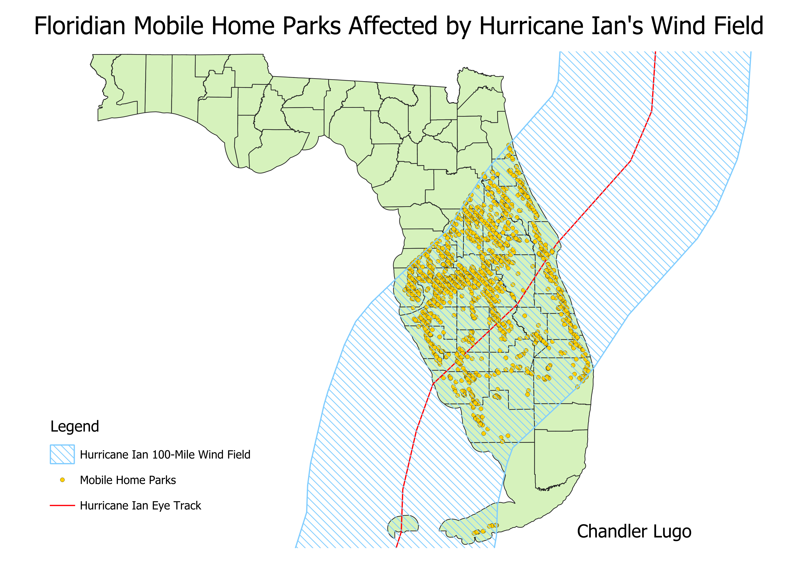

For this map, I answered the question of how many mobile parks where affected by Hurricane Ian's wind field. I think this topic is important because mobile homes are at high risk of devastation in the wake of stronger and stronger climate events like hurricanes, and Florida has one of the biggest mobile home populations in the country. First, I downloaded a shapefile of the hurricane's eye track and created a 100 mile buffer to represent where the strongest winds of the hurricane occured. Then, with a shapefile of points that represent all the mobile home parks in Florida, I used the intersection tool to select only the points within the buffer. With these methods, I was able to demonstrate the extent of strong winds of the hurricane and how many mobile home parks are affected in the event of such a strong weather event.
